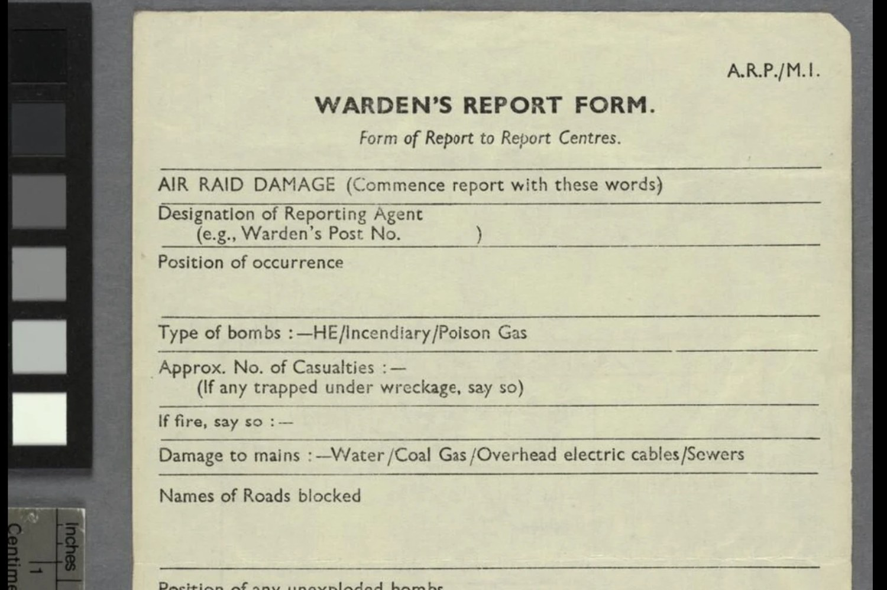
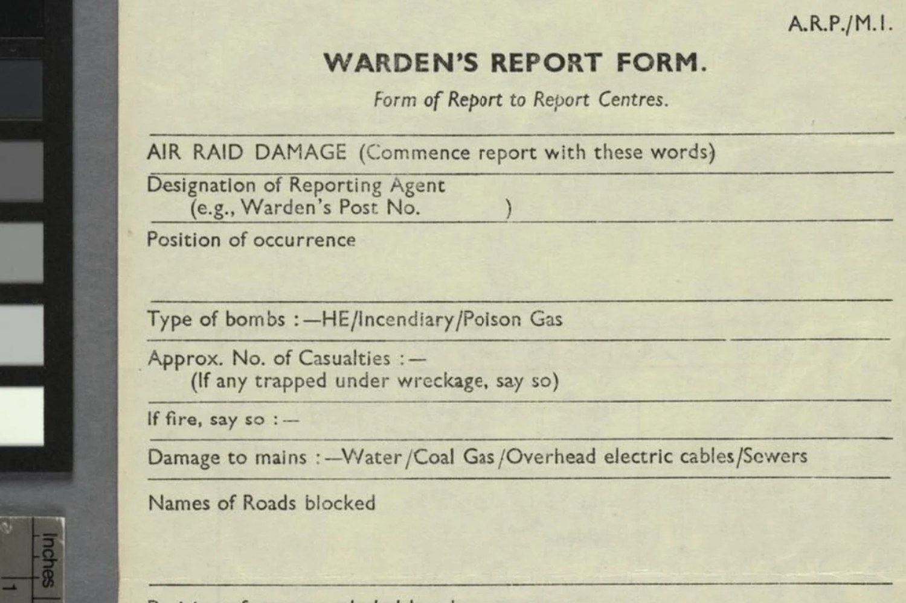
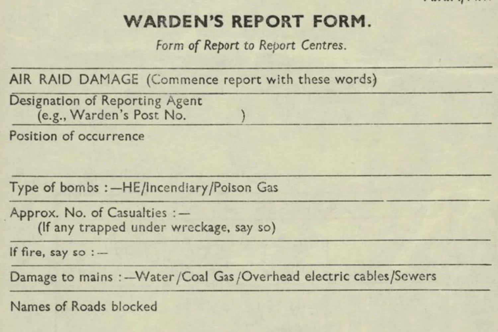

<!doctype html><html data-theme="dark"><meta charset="utf-8"><link rel="stylesheet" href="../../src/styles/tokens.css">
<style>body{margin:0;background:var(--color-ground);color:var(--color-meta);font:11px Helvetica,sans-serif;letter-spacing:.08em;text-transform:uppercase;padding:30px 36px}
main{display:grid;grid-template-columns:repeat(3,420px);gap:30px}figure{margin:0}
.f{aspect-ratio:3/2;border:1px solid var(--color-rule);overflow:hidden}img{width:100%;height:100%;object-fit:cover;display:block}figcaption{margin-top:8px}</style>
<main>
<figure><div class="f"></div><figcaption>A · With the archive's scale bars</figcaption></figure>
<figure><div class="f"></div><figcaption>D · Between the two</figcaption></figure>
<figure><div class="f"></div><figcaption>C · Heading, closer</figcaption></figure>
</main>
